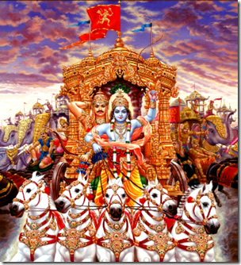

সরল ভাবার্থ
অর্জুন (কপিধ্বজ) কৌরবদের সুসজ্জিত দেখে এবং শস্ত্র নিক্ষেপের ঠিক আগ মুহূর্তে নিজের গাণ্ডীব ধনুক হাতে তুলে নিলেন।
বিস্তারিত ধর্মীয় ব্যাখ্যা
এই শ্লোকটি যুদ্ধের ঠিক প্রাক-মুহূর্তের চরম উত্তেজনা তুলে ধরেছে। অর্জুনকে এখানে 'কপিধ্বজ' বলা হয়েছে। কপি অর্থাৎ হনুমান যাঁর ধ্বজায় বা পতাকায় বিরাজমান। এটি অত্যন্ত তাৎপর্যপূর্ণ কারণ হনুমান হলেন ভক্তির প্রতীক এবং জয়ের দূত। ত্রেতা যুগে তিনি শ্রীরামচন্দ্রের সেবক ছিলেন, আর দ্বাপর যুগে তিনি অর্জুনের রথে চড়ে কৌরবদের আসুরিক শক্তির বিনাশ প্রত্যক্ষ করতে এসেছেন। অর্জুন যখন দেখলেন কৌরবরা পুরোপুরি প্রস্তুত, তখন তিনি তাঁর বিশ্বখ্যাত গাণ্ডীব ধনুকটি হাতে তুলে নিলেন। এটি ছিল তাঁর বীরত্বের বহিঃপ্রকাশ।
ধর্মীয় দৃষ্টিকোণ থেকে অর্জুন এখানে আদর্শ যোদ্ধার রূপ। তিনি মোহগ্রস্ত হওয়ার ঠিক আগ মুহূর্ত পর্যন্ত যুদ্ধের জন্য সংকল্পবদ্ধ ছিলেন। তাঁর এই 'ধনুরুদ্যম্য' বা ধনুক তুলে নেওয়া বুঝিয়ে দেয় যে, অধর্মের বিনাশ করার জন্য অস্ত্র ধারণ করা কেবল প্রয়োজনই নয়, বরং তা বীরের ধর্ম। কপিধ্বজ অর্জুনের রথটি ছিল অগ্নির দান, যা অপরাজেয়। কিন্তু মজার ব্যাপার হলো, ঠিক এই উত্তেজনার মুহূর্তেই অর্জুনের মনে এক অদ্ভুত পরিবর্তনের সূচনা হবে। মানুষের মনও ঠিক এই রণাঙ্গনের মতো। আমরা অনেক সময় খুব বড় সংকল্প নিয়ে কোনো কাজ শুরু করি, কিন্তু যখন সত্য আমাদের সামনে এসে দাঁড়ায়, তখন আমাদের হাত থেকে ধনুক (সংকল্প) খসে পড়ে। অর্জুনের এই ধনুক তোলা ছিল বীরত্বের প্রকাশ, কিন্তু এই ধনুক নামিয়ে দেওয়া হবে বিষাদ বা মোহের প্রকাশ। এই শ্লোকটি আমাদের মনে করিয়ে দেয় যে, বাইরের শত্রুর সাথে লড়াই করার জন্য অস্ত্রের প্রয়োজন হতে পারে, কিন্তু ভেতরের শত্রুর সাথে লড়াই করার জন্য আধ্যাত্মিক জ্ঞানের প্রয়োজন। অর্জুন এখন সেই যুদ্ধের জন্য প্রস্তুত হচ্ছেন, যা কেবল রণাঙ্গনে নয়, বরং তাঁর মনের গহীনে হতে চলেছে।

[ছবি: অর্জুনের লাল পতাকায় হনুমানের ছবি উড়ছে, অর্জুন গম্ভীর মুখে ধনুক তুলে নিয়ে তীরের দিকে হাত বাড়াচ্ছেন।]